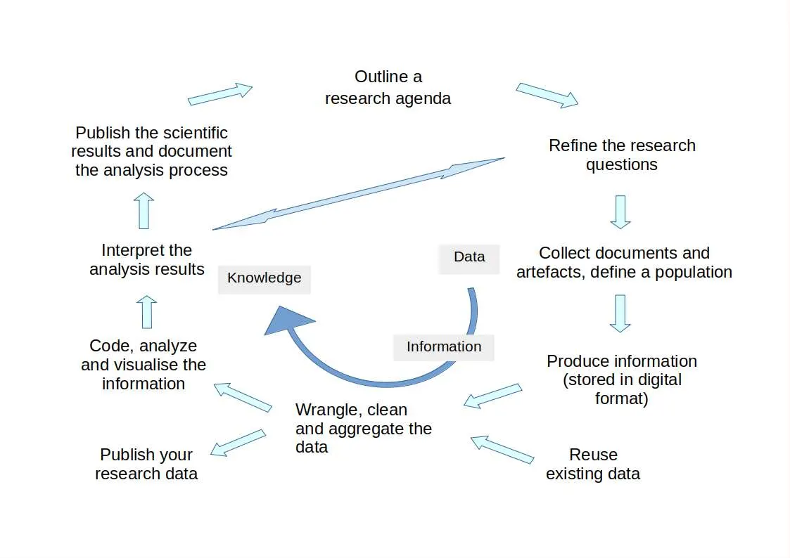

Contributing to a Paradigm Shift in Historical Research by Teaching Digital Methods to Master’s Students
![]()
Over the last few decades, we have witnessed a major transformation in the digital resources available, with significant implications for society, the economy and research. In the social sciences, and history in particular, we can observe the provision of ever larger amounts of open research data and a growing number of data journals, as well as the development of educational resources aimed at strengthening the digital skills of researchers. Knowledge graphs and Linked Open Data make an exponentially growing number of resources easily accessible and raise the question of a paradigm shift for historical research. But this will only happen if digital methods are integrated into the training of new generations of historians, not just as tools but as part of new approaches to knowledge production, as a growing number of scholars and projects are realising. I have been teaching a master’s course in digital methods in history at the University of Lyon 3 for five years, and now for four years at the University of Neuchâtel, which currently offers teachings in digital methods in the master courses in Historical Sciences and in Regional Heritage and Digital Humanities. In this paper, I will present the structure of the threefold programme of my teaching: in the first semester, understanding the research cycle, setting up an information system and discovering the semantic web; in the second, learning data analysis and visualisation methods; in the third, applying the methods to one’s own research agenda. I will also review the results obtained and provide some examples of completed Master’s theses.
teaching digital methodology, paradigm shift, open data reuse for research
Introduction
Over the past few decades, we have witnessed a major transformation in the digital resources and methodologies available, particularly in the field of Artificial Intelligence (AI), with significant implications for society and the economy. As it is stated in the White Paper The Digital Turn in the Sciences and Humanities by the German Research Foundation’s (DFG), the digital turn is bringing about three major changes in research: former analogue research practices are being realised with digital tools (transformative change); data-intensive technologies allow new research questions to be addressed (enabling change); digital technologies, especially AI methods, can even replace humans in parts of the research project (substitutive change).
This phenomenon can also be observed in the human and social sciences (HSS), and even in history, and is particularly striking in the area of open data publication. On the one hand, data can be deposited in well-known, dedicated repositories, such as Zenodo, Nakala, DaSCH or DANS, and a growing number of data journals (e.g. the Journal of Open Humanities Data) publish papers dedicated to contextualising data production in order to facilitate its reuse. On the other hand, directly accessible data are available in the form of relational databases that can be queried (e.g. the PRELIB project) or, using the RDF framework, in the form of Linked Open Data (e.g. the Sphaera project or the Geovistory collaborative platform). We can thus observe that the digital transformation of research practices in HSS (transformative change) is leading to the production and publication of an exponentially growing wealth of information, making it possible to address new research questions (enabling change), in particular by applying AI methodologies in the context of new disciplines known under the label of computational humanities (substitutive change).
A paradigm shift
This important transformation of historical research raises the question of a paradigm shift. This concept was used by Thomas Kuhn in 1962 in his book The Structure of Scientific Revolutions (Kuhn 1962) to describe the intellectual structure of disciplines and to analyse the ruptures that lead to scientific revolutions. There are two essential elements to be considered: on the one hand, the paradigm consists of all the shared methods, practices and achievements that form the basis and structure of a disciplinary community; on the other hand, it includes, in its ancient, original sense, the teaching practices applied during education with the aim of enabling the acquisition of the skills essential to the practice of a discipline. Since the purpose of scientific activity is the production of knowledge, the paradigm enables students to learn the methods and rules that are legitimate within a disciplinary community. The digital turn thus raises the question of the transformation of methods and forms of knowledge production in the historical sciences, as can be seen from the publications of a growing number of scholars (e.g. the Journal of Digital History).
On the basis of this analysis, it seems essential to introduce training in digital methodologies and tools into the standard disciplinary curriculum of history, and not just in optional Digital Humanities Minors. Since learning disciplinary tools is at the heart of the paradigm of a discipline, digital methodologies should be taught from the beginning of university studies, so that future generations of teachers, doctoral students, professors and researchers can make the transition to the new paradigm from within. This will enable to create a disciplinary community trained in the new methodologies, familiar with the issues from direct experience, and capable of defending the place of the historical sciences in the field of contemporary science and the digital society (Beretta 2023).
Master’s course in digital methodology for historical research
These considerations stem not only from my work as a CNRS researcher who has spent the last fifteen years building collaborative information systems for research (symogih.org, ontome.net, geovistory.org)(Beretta 2024), in line with the vision that, as the DFG White Paper points out, “digital infrastructure is essential for research and must be built for long-term service”, but also from ten years of experience in teaching digital methodology at bachelor and master level in history, first at the University of Lyon 3 and for the last four years at the University of Neuchâtel, which currently offers courses in digital methodology in the master’s programmes in Historical Sciences and in Regional Heritage and Digital Humanities.
But at this point an essential question arises: what should be taught to history students to help them make the most of the digital transition and build a new paradigm? Looking at recent handbooks, e.g. (Antenhofer, Kühberger, and Strohmeyer 2023; Döring et al. 2022; Schuster and Dunn 2021), or at educational resources like the programminghistorian.org project, we can see a huge variety of approaches and areas of application of digital methods, and often the answer to the question depends on the own field of research and experience. In this sense, I will not provide a somewhat abstract review of the literature, and existing courses, but rather share some aspects of my own approach in the hope that they may be of some use or inspiration to others.
My teaching at Master’s level consists of a three-part programme: the first semester deals with understanding the research cycle in history, setting up an information system and discovering the semantic web; the second focuses on learning data analysis and visualisation methods using Python notebooks; the third is about applying the methods to the students’ own research agenda. This teaching programme has two objectives, which correspond to the first two components of the digital transformation mentioned in the DFG White Paper: to learn a methodology suitable for the manual collection of information from sources, according to the best practices of computer science (transformative change); to learn a pool of data analysis and visualisation methodologies, allowing the exploitation of the growing number of existing resources (enabling change). These courses therefore provide students with basic skills, particularly in data analysis, which they can apply directly to their Master’s thesis and, if they wish, continue on to computational research courses such as Machine Learning or Natural Language Processing (substitutive change).
Since the aim of research is to produce knowledge, an analysis of the research process, conceptualised in terms of a research cycle, forms the basis of my courses. This choice underlines the iterative dimension that is specific to the scientific approach in general and also applies to the formulation and verification (or falsification) of hypotheses that is specific to the social sciences.

In this context, knowledge is understood as the result of the analysis and interpretation of information. With regard to information it is at the heart of the scientific process and can be defined as a representation of reality (which is the only datum is the world we observe), and more precisely as an identification and representation of the objects in the world (people, organisations, artefacts, etc.), their characteristics (physical properties of objects, education and income levels of people, opinions, etc.) and their relationships in time and space (membership in organisations, exchange of messages or goods, journeys, etc.). Knowledge can thus be defined as an interpretation of the world represented in the information collected, and if the former is the result of the scientific activity and is generally published in the form of books or articles, the latter should be understood as a most accurate approximation of the facts in words, making the information reusable for new research when shared in the form of digital open data according to the FAIR principles.
As the diagram of the knowledge production cycle shows, all research must begin with the definition of a research agenda that fits within the horizon of existing knowledge, expressed in literature, and that defines the methodology that will be adopted and the research questions to be answered. Zotero seems to be the best tool for this task, not only for storing bibliographical references, but also for enriching them with your own notes and categories, and for connecting them to resources on the web, thus realising the first step of a digitally transformed research. On the basis of their line of inquiry, student must then select from the available mass of sources the relevant ones in order to gather the information that will be analysed and serve as a basis for knowledge. They will have to decide what information will be systematically retained and how it will be conceptualised and produced. This raises the issue of the conceptual model and the choice of digital storage technology, because while spreadsheets may be adequate if one is limited to systematically collecting a certain number of characteristics of a population of individuals of the same type, as soon as one wishes to inform about complex relationships between different objects (persons, organisations, artefacts, opinions, economic values, etc.) in space and time, it is essential to use a relational or graph-oriented database in order to capture the full wealth of the required information.
This is precisely the content of the teaching of the first semester and I propose to the students to follow the example of the teacher’s own GitHub repository in order to document, in a dedicated GitHub repository and wiki the progress of their research cycle. In other words, I’m adopting a kind of teaching by example, where the whole approach is documented in a sample project available on GitHub that can be imitated and applied to one’s own subject, while endeavouring to go through all the proposed steps by creating one’s own SQLite database, one’s own analyses in Python, etc.
To propose the simplest and most concrete use case, I adopt a proposopographical approach and invite students to search Wikipedia for the biographical records of a population that corresponds to their interests, for example political activists or fashion designers, while asking themselves some questions to which they would like to find answers. We then consider the Wikipedia biographical records for this population as sources and define a catalogue of information to be extracted that will lead to the creation of a conceptual model and an initial SQLite database. Students will thus acquire the basic elements for creating a simple, easy-to-manage information system, which will greatly facilitate the manual input of relatively complex information from the sources analysed (transformative change).
Since it does not make sense to produce a lot of information manually in the context of this course, at this stage I take advantage of the DBPedia and Wikidata projects, which provide a wealth of information on the previously selected populations in the form of structured data published in RDF. Students will therefore learn how to retrieve this information using the SPARQL language and import it into their SQLite database for refinement, thus discovering the process of re-using existing data, which can be considerable in volume with thousands of individuals described and dozens of pieces of information about them (enabling change).
This step marks the transition to the second semester, which begins by learning basic skills in Python and using Jupyter notebooks. To be able to analyse the information collected, it must be simplified and coded. It is at this stage that the research questions are introduced and a range of tools are applied to the information collected in the form of digital data: univariate and multivariate statistical analysis, network analysis, spatial representation, etc. Students will discover a new notion of model, now in the statistical sense, that emerges from these analyses and has an eminently heuristic function, since the representations produced by analysis software always require critical discussion, contextualisation and interpretation. At the same time, these methods and digital tools make visible significant phenomena that would otherwise be impossible to see “with the naked eye”, given the considerable volume and complexity of the information collected on the Semantic Web.
At the end of the process, students formulate some possible answers to their research questions and document the results obtained in their repository wiki, accompanied by graphics resulting from the analysis. They thus complete the research cycle by producing new knowledge in response to their initial research agenda, publishing online not only the results of their investigations, but also the database, the Python notebooks and the discussion of the analyses that led to their conclusions, thus learning in practice to undertake a reproducible scientific approach. The third semester is devoted to accompanying students who wish to realise their Master’s thesis using the methods learned in the previous semesters. This is still an ongoing process in Neuchâtel, so in my paper I’ll present some results from the master’s theses written by students at Lyon 3 university.
Results and discussion
I observed in all these years that if the students invest some time in practising the exercises and follow the learning cycle in this kind of apprenticeship by example during the two semesters, they can achieve amazing results (e.g. Militant.e.s pour le droits des femmes and Fashion Designers). But at the same time I have to admit that the learning curve is steep, because in just one year students learn the basics of conceptual modelling, SQL, SPARQL, Python and the essential concepts of various data analysis methods. As well as versioning with GIT and putting data and notebooks online. On the one hand, a certain pedagogical investment is necessary, especially to support students who have less of a natural inclination towards digital technology. On the other hand, the more technical part of this method should be introduced at bachelor level, like GitHub versioning and Python. At the University of Neuchâtel, a brand new minor in Digital Humanities has been introduced in the bachelor’s programme, which will enable students who have taken it to benefit more from the master’s courses.
As far as the Master’s thesis is concerned, it seems that the conceptual modelling and the setting up of a database for the input of information extracted from sources are the most useful, while the venture into collecting data available on the web as a basis for the Master’s thesis does not yet seem attractive. However, there are exceptions, as shown by a work using the Refuge Huguenot database, which I will present in my paper. In conclusion, it seems that at the moment students that take this course can only reach the level of transformative change. But experience shows that it is only with the development of appropriate research infrastructure and the emergence of a wider community of digital disciplinary practices that we will be able to provide students with a context that will allow them to achieve the enabling and substitutive changes, and thus bring about an effective paradigm shift. It is up to the new generations to make this happen.